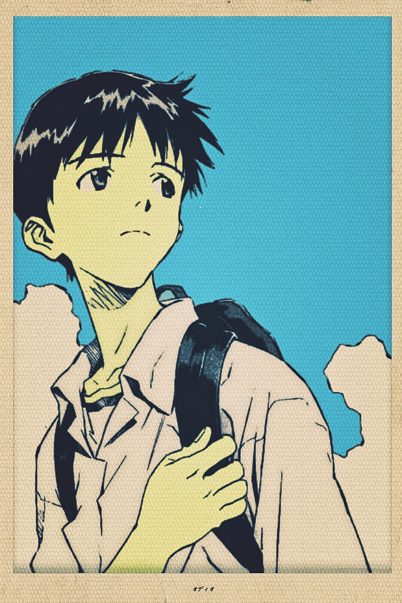
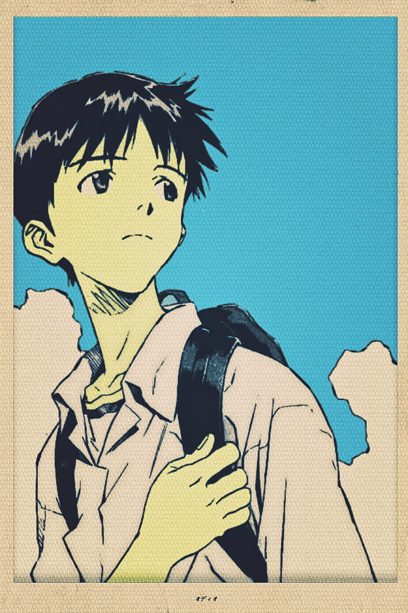

Watch Order
The recomended watch order of NGE
Currently, NGE has one series, 2 movies, and a movie series consisting of 4 movies. Wondering which one to watch first? Here's a guide!
1995 NGE, the first one
Of course you should start off with the 1995 series as it is the first one.
What you should watch first
- Watch order
- 1995 Neon Genesis Evangelion (26 episodes)
- Evangelion: Death(true)2
- The End of Evangelion
Rebuild of Evangelion
This is basically a remake or re-telling of the NGE series
- Rebuild of Evangelion
- Evangelion: 1.0 You Are (Not) Alone
- Evangelion: 2.0 You Can (Not) Advance
- Evangelion: 3.33 You Can (Not) Redo
- Evangelion:3.0+1.01 Thrice Upon a Time

 
